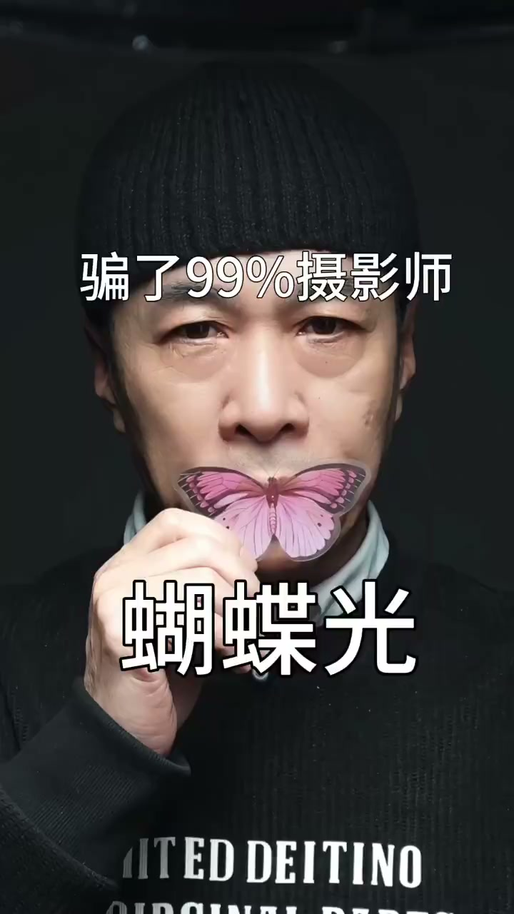
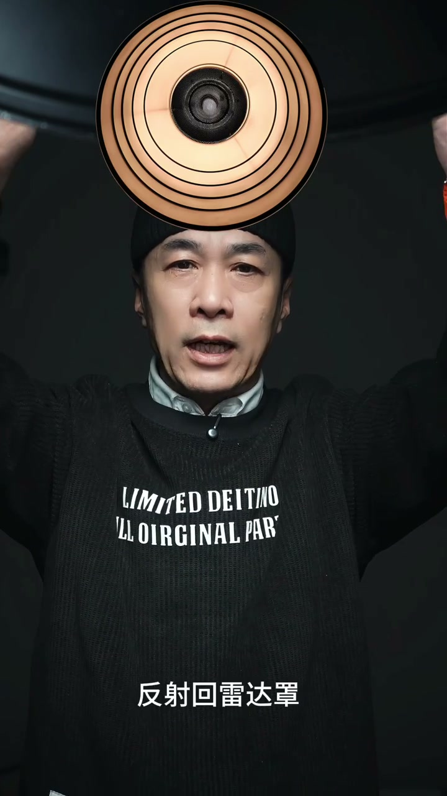
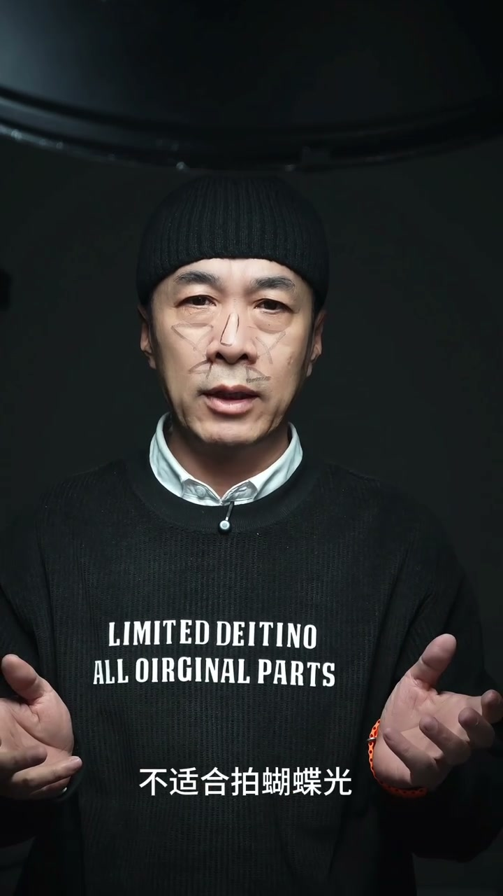

内容要点
这段视频围绕「骗了摄影圈上百年的蝴蝶光」展开，按时间介绍其中的关键环节。来跟大家揭穿一个骗了99%摄影师的骗局。
原理说明
来跟大家揭穿一个骗了99%摄影师的骗局。鼻子下面有蝴蝶叫蝴蝶光。你看见鼻子下的蝴蝶了吗。来 我带你找蝴蝶。不光 为什么就要去找光和找影呢。一说能不朗光 你非得在脸颊上找亮区。一说到派了盟光 你就非得在鼻子下找影。对摄影的光影 你理解得太到位了。没有光就没有影。这就是你的逻辑

[00:00] 原理说明相关画面。
Footage explaining the principle.
核心内容
找鼻子下面蝴蝶也好。都是在找结果。做任何事情 都有个目的 叫做动机。来 我问问大家 打三角形亮区是你的目的吗。打的鼻子下面有蝴蝶 是目的吗。显然不是。那目的是什么呢。派了盟光的打法是用雷达照 光的中心轴对准鼻梁。平起头的高度 光的位置大概伸手的摸着 记住了。这是要点
操作演示
压一压 眼睛下面这块肌肉。你觉得这块肌肉是垂直地面长 还是跟鼻梁一样。微微的朝上长。答案显而易见 跟鼻梁类似微微朝上长。是不是刚好垂直雷达照。我问你 现在整张脸受光最多的是哪里。肯定是垂直的地方。来 就是这个区域 还有这个区域。这还不像蝴蝶呀。我们继续 这块肌肉叫口轮杂肌 是一个圆环状的肌肉

[01:35] 操作演示相关画面。
Operational demonstration footage.
进阶技巧
在眉弓骨下面画暗的眼影 目的是不是画出五官的立体感。拍了门光的目的就是拍出立体感。而不是为了拍出蝴蝶。有一种说法 说亚洲人的五官长得不够立体 不适合拍蝴蝶光。像老刘这样鼻梁扁平的人 拍了门光的打法 鼻子下面是没有蝴蝶。他就得把灯味往上烙 直到这里出现蝴蝶。我们试一下。有了蝴蝶吧 但是你有没有看见整张脸像一个倒三角形的枯楼脸。完全没有了美感。他们的逻辑还是在找蝴蝶 没有蝴蝶就不是蝴蝶光 就不是拍了门光

[02:26] 进阶技巧相关画面。
Footage on advanced techniques.
总结
在眉弓骨下面画暗的眼影 目的是不是画出五官的立体感。